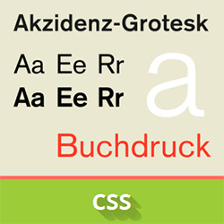
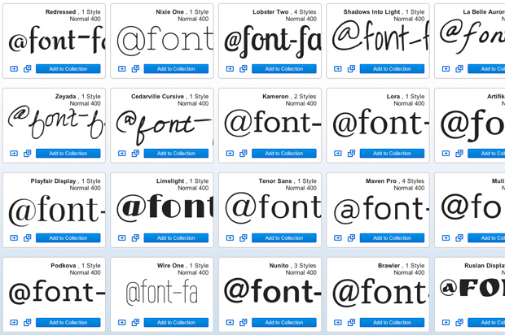
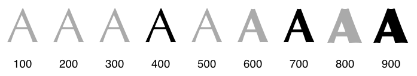
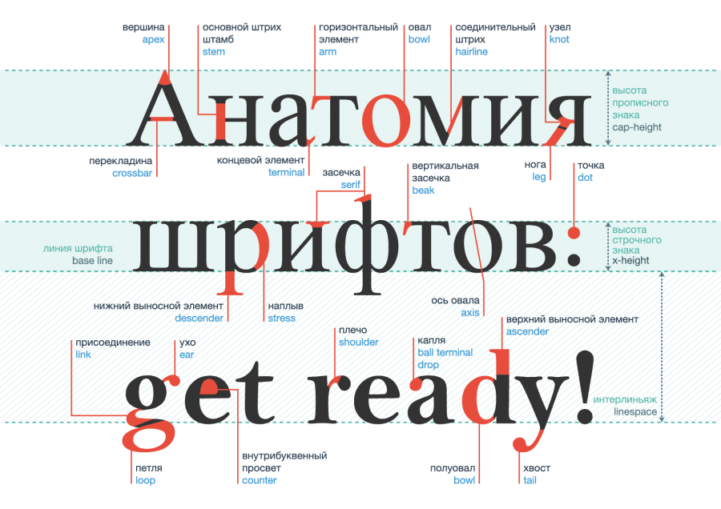

CSS-шрифты

Шрифт в CSS — это ресурс, содержащий визуальное представление символов. На самом простом уровне он содержит информацию,
которая сопоставляет коды символов с фигурами (называемые глифами), представляющие эти символы.
Шрифты, использующие общий стиль дизайна, обычно группируются в семейства шрифтов, классифицируемые набором стандартных
свойств шрифта. Внутри семейства форма, отображаемая для данного символа, может варьироваться в зависимости от толщины
обводки, наклона или относительной ширины.
Ресурсы шрифтов могут быть установлены локально на устройстве, в котором работает браузер. Для локальных ресурсов шрифта
описательная информация может быть получена непосредственно из ресурса шрифта (например, из файла arial.ttf ). Для
загружаемых ресурсов шрифтов, также называемых веб-шрифтами, описательная информация включена со ссылкой на ресурс
шрифта (например, для шрифта Poiret One).
Используя различные шрифты для заголовков, абзацев и других элементов, можно задавать определенный стиль письменных
сообщений, передавая желаемые эмоции и настроение. Окунаясь в многообразие шрифтов, не забывайте, что текст основного
содержимого веб-страницы должен быть в первую очередь читабельным.
Используя различные шрифты для заголовков, абзацев и других элементов, можно задавать определенный стиль письменных
сообщений, передавая желаемые эмоции и настроение. Окунаясь в многообразие шрифтов, не забывайте, что текст основного
содержимого веб-страницы должен быть в первую очередь читабельным.
Не рекомендуется использовать более двух шрифтов на странице, а желаемого контраста можно достигнуть за счет
комбинирования шрифтов разной толщины, размера, начертания или же при помощи цвета. Более подробно с правилами
веб-типографики вы сможете ознакомиться в предложенной статье.

Базовые свойства CSS-шрифтов
СОДЕРЖАНИЕ
- Семейство шрифтов: свойство font-family
- Насыщенность шрифта: свойство font-weight
- Ширина шрифта: свойство font-stretch
- Начертание шрифта: свойство font-style
- Размер шрифта: свойство font-size
- Относительный размер шрифта: свойство font-size-adjust
- Сокращенная запись свойств шрифта: свойство font
- Управление синтезом шрифтов: свойство font-synthesis
1. Семейство шрифтов: свойство font-family
Свойство font-family используется для выбора начертания шрифта. Поскольку невозможно предсказать, установлен тот или
иной шрифт на компьютере посетителя вашего сайта, рекомендуется прописывать все возможные варианты однотипных шрифтов. В
таком случае браузер будет проверять их наличие, последовательно перебирая предложенные варианты.
Если в названии шрифта имеются пробелы или символы (например, #, $, %), то оно заключается в кавычки. Это делается для
того, чтобы браузер мог понять, где начинается и заканчивается название шрифта.
Свойство наследуется.
2. Насыщенность шрифта: свойство font-weight
Свойство font-weight задаёт насыщенность шрифта.
Свойство наследуется.

3. Ширина шрифта: свойство font-stretch
Свойство font-stretch позволяет выбрать нормальное, сжатое или расширенное начертание символа из семейства шрифтов.
Свойство не работает на любом шрифте, а только на шрифтах, для которых разработаны различными начертания,
соответствующими определенным размерам.
Свойство наследуется.
4. Начертание шрифта: свойство font-style
Свойство font-style позволяет выбрать стиль начертания для шрифта. При этом разница между курсивом и наклонным
начертанием заключается в том, что курсив вносит небольшие изменения в структуру каждого символа, в то время как
наклонное начертание представляет собой наклонную версию прямого шрифта. Свойство наследуется.
5. Размер шрифта: свойство font-size
Свойство font-size указывает желаемую высоту глифов из шрифта. Свойство наследуется.
6. Относительный размер шрифта: свойство font-size-adjust
Для любого заданного размера шрифта явный размер и четкость текста варьируется в зависимости от шрифта. Для таких
шрифтов, как латиница или кириллица, которые различают прописные и строчные буквы, относительная высота строчных букв по
сравнению с их прописными аналогами является определяющим фактором удобочитаемости. Это обычно называют значением
аспекта. Точно определенный, он равен x-height шрифта, разделенной на размер шрифта.
В ситуациях, когда для шрифта указано несколько семейств шрифтов, резервные шрифты могут не использовать то же значение
аспекта, что и желаемое семейство шрифтов, и, следовательно, будут казаться менее четкими.
Свойствоfont-size-adjust — способ сохранить читабельность текста при использовании резервных шрифтов. Это достигается
путем настройки размера шрифта таким образом, чтобы x-height была одинаковой независимо от используемого шрифта.
Свойство наследуется.

7. Сокращенная запись свойств шрифта: свойство font
Свойство font за исключением описанного ниже, является сокращенным свойством для установки font-style, font-variant,
font-weight, font-stretch, font-size/line-height, font-family. Также могут быть включены значения для свойства
font-variant, которые поддерживаются CSS 2.1 — normal или small-caps.
Все подсвойства свойства font сначала сбрасываются на свои начальные значения, включая перечисленные выше, плюс
font-size-adjust, font-kerning, все подсвойства font-variant и настройки шрифтов, за исключением font-synthesis. Затем
этим свойствам присваиваются те значения, которые указаны в свойстве font. Для свойства font-size-adjust невозможно
установить значение, отличное от его начального значения, поэтому следует использовать вместо этого индивидуальное
свойство. Если явное значение какого-либо свойства не нужно, то оно опускается.
Свойство наследуется.
8. Управление синтезом шрифтов: свойство font-synthesis
Свойство font-synthesis определяет, разрешено ли пользовательским агентам (браузерам) синтезировать полужирное или
наклонное начертание шрифтов, когда они отсутствуют в семействе шрифтов. Если weight не указан, пользовательские агенты
не должны синтезировать полужирное начертание, а если style не указан, пользовательские агенты не должны синтезировать
курсив. Свойство наследуется.